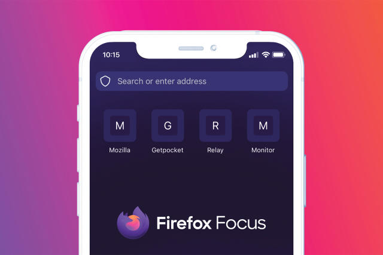

×

Mozilla Focus
Simply private mobile browsing
Firefox Focus is your dedicated privacy browser with automatic tracking protection. With Focus, your pages load faster and your data stays private.
Key Features:
Easily erase your history, passwords and cookies , so unwanted ads don’t follow you around online
Firefox Focus offers next-level privacy by default and it’s backed by Mozilla
Firefox Focus blocks a wide range of common trackers by default including social trackers
Focus removes trackers so the pages you’re viewing require less data and load much faster
Get Firefox Focus